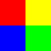
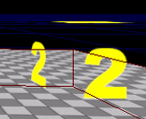

머티리얼 인스턴스 불변 파라미터 상속
문서 변경내역: Andrew Moise 작성. 홍성진 번역.
개요
MaterialInstanceConstant (머티리얼 인스턴스 불변) 오브젝트를 통해 사용자가 머티리얼에 설정되어 있는 정의된 파라미터를 덮어쓸 수 있으며, 주어진 머티리얼을 입맛대로 변경한 인스턴스를 만들 수 있습니다.
머티리얼에 일정한 표현식을 활용하면 인스턴스 단위별로 줄 수 있는 파라미터를 만들 수 있습니다. 그러한 표현식은 다음과 같습니다:
| 머티리얼 표현식 | 설명 |
|---|
| ScalarParameter (스칼라 파라미터) | 하나의 플로트 사용자 정의 값을 줍니다. 알파 값, 멀티플라이어(곱수) 등에 좋습니다. |
| VectorParameter (벡터 파라미터) | 네 개의 플로트 사용자 정의 값을 줍니다. 컬러나 UVOffset 과 같은 2/3/4 컴포넌트 연산에 좋습니다. |
| TextureSampleParameter2D (텍스처 샘플 파라미터 2D) | Texture2D 사용자 정의 값을 줍니다. 인스턴스마다 텍스처가 달라지는 단일 머티리얼을 만드는 데 좋습니다. |
| TextureSampleParameter3D (텍스처 샘플 파라미터 3D) | Texture3D 사용자 정의 값을 줍니다. |
| TextureSampleParameterCube (텍스처 샘플 파라미터 큐브) | TextureCube 사용자 정의 값을 줍니다. |
각 MaterialInstanceContant 에는 그 부모로의 포인터가 있는데, 거기서 덮어쓰지 않는 파라미터를 상속합니다. 부모는 Material 또는 다른 MaterialInstanceContant 중 하나일 수도 있습니다. 이러한 시스템으로 사용할 수 있는 이펙트를 확장하기 위한 상속 체인을 재미있게 구성할 수 있습니다.
여기서는 다중 상속 구성 상태에서 이러한 파라미터의 상속이 어떻게 발생하는지에 대한 예제를 들어 보겠습니다. 특수한 텍스처를 활용하는 머티리얼을 만든 다음, 상속되는 인스턴스를 통해 시스템의 유연성을 선보이겠습니다.
소스 텍스처
활용된 소스 텍스처 ColorQuarters.tga 는 알파 채널에 숫자를 끼워넣은 단순한 4 색 이미지로, 아래와 같습니다:

그림 1. ColorQuarters.tga - RGB 이미지
 그림 2. ColorQuarters.tga - 알파 채널
BlendMode 가 BLEND_Translucent 나 BLEND_Masked 로 (블렌드 모드가 반투명이나 마스크로) 설정된 머티리얼을 사용하는 오브젝트에 적용하면, 이미지는 1 부터 4 까지의 숫자를 각각 빨강, 노랑, 파랑, 녹색으로 표시할 것입니다.
그림 2. ColorQuarters.tga - 알파 채널
BlendMode 가 BLEND_Translucent 나 BLEND_Masked 로 (블렌드 모드가 반투명이나 마스크로) 설정된 머티리얼을 사용하는 오브젝트에 적용하면, 이미지는 1 부터 4 까지의 숫자를 각각 빨강, 노랑, 파랑, 녹색으로 표시할 것입니다.
머티리얼
위의 텍스처를 활용하도록 만든 머티리얼은 ThreeParam_Mat 로, 일정한 시간에 네 부분중 한 부분만 표시되도록 UV 좌표를 잘라내고 있습니다. 어떻게 했냐면, 인풋 텍스처 좌표를 (0.5, 0.5) 로 스케일해 주었습니다. 딱 이 스케일링 까지의 결과는 (블렌드 모드를 적절히 설정했다고 칠 때) 빨간색의 '1' 이미지가 나올 것입니다.
상속 체인에 대한 데모로써, 머티리얼에 사용자가 정의 가능 파라미터를 셋 집어 넣겠습니다.
첫째 파라미터 UVOffset (UV 오프셋)은 스케일된 텍스처 좌표에 더해줄 벡터 파라미터입니다. 이 파라미터는 파라미터 이름을 "UVOffset" 로 설정한 MaterialExpressionVectorParameter 인스턴스로 쥐어줍니다. 이 표현식의 값을 X, Y 값만 통과시키는 ComponentMask 에 물려줍니다. 그 결과를 스케일된 UV 값에 더해주어 사용된 텍스처의 서브 이미지를 '전환'(shift)시킵니다. 예를 들어 UVOffset 파라미터에 (0.5, 0.0) 가 설정되었다면, 텍스처는 사분면 중 오른쪽 윗 부분을 뽑아 쓰게 될 것입니다. UVOffset 디폴트 값은 (0.0, 0.0, 0.0, 0.0) 로 설정되어 텍스처 오프셋이 없어집니다.
최종적으로 계산된 텍스처 좌표를 TextureSample 표현식, 소스 이미지로 설정된 텍스처를 갖고있는 것에 전달합니다.
둘째 파라미터 TextureBright (텍스처 밝기)는 결과 이미지를 '밝(게 또는 어둡)게' 하기 위해 텍스처 샘플의 RGB 출력으로 곱해준 벡터 파라미터입니다. 이 파라미터는 이름이 "TextureBright" 로 설정된 MaterialExpressionVectorParameter 인스턴스로 쥐어줍니다. 텍스처의 RGB 출력을 Multiply 표현식에 물린 상태로 이 표현식의 출력을 물려줍니다. 그리고서 그 곱하기 결과를 머티리얼에 대한 최종 디퓨즈 값으로 사용합니다. TextureBright 의 디폴트 값은 (1.0, 1.0, 1.0, 1.0) 으로, 텍스처의 원래 밝기 상태입니다.
셋째 파라미터 AlphaScale (알파 스케일)은 이미지의 최종 불투명도를 스케일하기 위해 텍스처 샘플의 알파 출력으로 곱해준 스칼라 파라미터입니다. 이 파라미터는 이름이 "AlphaScale" 로 설정된 MaterialExpressionScalarParameter 인스턴스로 쥐어줍니다. 텍스처의 알파 출력을 Multiply 표현식에 물린 상태로 이 표현식의 출력을 물려줍니다. 그리고서 그 곱하기 결과를 머티리얼에 대한 최종 오패시티(불투명도) 값으로 사용합니다. AlphaScale 의 디폴트 값은 1.0 으로, 텍스처의 원래 알파 상태입니다.
완성된 머티리얼의 모습은 다음과 같습니다:
 그림 3. 머티리얼 에디터에서 본 ThreeParam_Mat
이 머티리얼을 스태틱 메시, 여기서는 디폴트 에디터 큐브에 '그대로' 적용시켜 준 모습은 아래와 같습니다:
그림 3. 머티리얼 에디터에서 본 ThreeParam_Mat
이 머티리얼을 스태틱 메시, 여기서는 디폴트 에디터 큐브에 '그대로' 적용시켜 준 모습은 아래와 같습니다:
 그림 4. 스태틱 메시에 적용한 ThreeParam_Mat
보시는 바와 같이 텍스처의 서브 이미지는 이미지의 왼쪽 윗부분입니다. 디폴트 값의 결과는 이미지 밝기도 오프셋도 알파도 그대로인 상태입니다.
그림 4. 스태틱 메시에 적용한 ThreeParam_Mat
보시는 바와 같이 텍스처의 서브 이미지는 이미지의 왼쪽 윗부분입니다. 디폴트 값의 결과는 이미지 밝기도 오프셋도 알파도 그대로인 상태입니다.
첫째 MateriaInstanceConstant 오브젝트
첫째 MaterialInstanceConstant, First_MatInst 를 만들어 그 부모를 ThreeParam_Mat 로 설정했습니다. 또한 벡터 파라미터를 두 개 설정하기도 했는데, 부모 머티리얼의 디폴트 파라미터를 덮어쓰기 위해서입니다.
첫째 이름은 "TextureBright" 이며, 값은 (5.0, 5.0, 5.0, 1.0) 로 설정되었습니다. 이 값은 부모 머티리얼에 설정된 (1.0, 1.0, 1.0, 1.0) 를 덮어쓰게 되어 텍스처가 5 배 '밝아지게' 만들 것입니다.
둘째 이름은 "UVOffset" 이며, 값은 (0.5, 0.5, 0.0, 0.0) 로 설정되었습니다. 이 값은 부모 머티리얼에 설정된 (0.0, 0.0, 0.0, 0.0) 를 덮어쓰게 되어 텍스처 샘플이 이미지의 왼쪽 아래 부분, 녹색 '4' 를 표시하게 될 것입니다.
이 MaterialInstanceConstant 의 프로퍼티는 아래와 같습니다:
 그림 5. First_MatInst 프로퍼티
이 머티리얼 인스턴스 불변을 스태틱 메시에 적용한 결과는 아래와 같습니다:
그림 5. First_MatInst 프로퍼티
이 머티리얼 인스턴스 불변을 스태틱 메시에 적용한 결과는 아래와 같습니다:
 그림 6. 스태틱 메시에 First_MatInst 를 적용한 모습
보시는 것처럼 텍스처의 서브이미지는 이미지의 왼쪽 아래 부분입니다. 텍스처 밝기도 그림 4. 에서 본 큐브보다 '밝습니다.' 인스턴스 불변이 제대로 작동하고 있습니다.
그림 6. 스태틱 메시에 First_MatInst 를 적용한 모습
보시는 것처럼 텍스처의 서브이미지는 이미지의 왼쪽 아래 부분입니다. 텍스처 밝기도 그림 4. 에서 본 큐브보다 '밝습니다.' 인스턴스 불변이 제대로 작동하고 있습니다.
둘째 MateriaInstanceConstant 오브젝트
둘째 MaterialInstanceConstant, Second_MatInst 를 만들어 그 부모를 First_MatInst MaterialInstanceConstant 로 설정했습니다. 또한 벡터 파라미터를 하나 설정하기도 했는데, 부모의 파라미터를 덮어쓰기 위해서입니다.
파라미터의 이름은 "TextureBright" 이며, 값은 (5.0, 5.0, 5.0, 1.0) 로 설정했습니다. 이 값이 부모 머티리얼의 (1.0, 1.0, 1.0, 1.0) 를 덮어쓰게 되어 텍스처를 5 배 '밝아지게' 만들 것입니다.
파라미터 이름은 "UVOffset" 이며, 값은 (0.5, 0.0, 0.0, 0.0) 로 설정했습니다. 이 값이 부모 머티리얼의 (0.5, 0.5, 0.0, 0.0) 를 덮어쓰게 되어 텍스처 샘플이 이미지의 오른쪽 윗부분으로 전환, 노랑색 '2' 를 나타내게 됩니다.
이 MaterialInstanceConstant 의 프로퍼티는 아래와 같습니다:
 그림 7. Second_MatInst 프로퍼티
이 머티리얼 인스턴스 불변을 스태틱 메시에 적용한 결과는 아래와 같습니다:
그림 7. Second_MatInst 프로퍼티
이 머티리얼 인스턴스 불변을 스태틱 메시에 적용한 결과는 아래와 같습니다:

그림 8. 스태틱 메시에 Second_MatInst 를 적용한 모습
보시는 것처럼 텍스처의 서브이미지는 이미지의 오른쪽 윗부분입니다. 텍스처의 밝기도 그림 4. 에서 본 큐브보다 '밝습니다.' First_MatInst 의 값을 사용한 것이니, 인스턴스 불변이 제대로 작동하고 있습니다.
요약
각각의 큐브는 같은 머티리얼을 활용하고 있지만, MaterialInstanceConstant 덕에 각기 다른 모습으로 나타나고 있습니다. 체인으로 연결해 주면 똑같은 베이스 머티리얼에서 다양한 효과를 내는 데 사용할 수 있습니다.
이 예제에서는 MaterialInstanceConstant 의 사용을 통해 덮어쓰기 용으로 쓸 수 있는 파라미터가 셋 포함된 머티리얼을 하나 만들었습니다.
상속 구성 체인은 다음과 같습니다 ('-->' 는 '왼쪽이 오른쪽의 부모'임을 나타냅니다.):
ThreeParamMat --> First_MatInst --> Second_MatInst.
아래는 여기서 사용된 큐브 셋을 전부 찍은 스크린샷입니다:
 그림 9. 예제 큐브 삼형제
아래 표는 각 큐브가 그 파라미터를 구해오는 소스를 자세히 나타낸 것입니다:
그림 9. 예제 큐브 삼형제
아래 표는 각 큐브가 그 파라미터를 구해오는 소스를 자세히 나타낸 것입니다:
| 큐브 | 적용된 머티리얼 | TextureBright | UVOffset | AlphaScale |
|---|
| 가장 왼쪽 | ThreeParam_Mat | ThreeParam_Mat | ThreeParam_Mat | ThreeParam_Mat |
| 가운데 | First_MatInst | First_MatInst | First_MatInst | ThreeParam_Mat |
| 가장 오른쪽 | Second_MatInst | First_MatInst | Second_MatInst | ThreeParam_Mat |